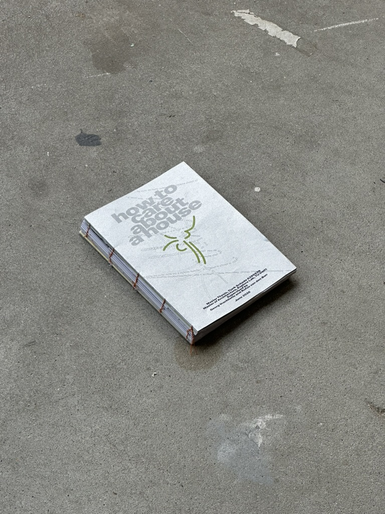

how to care about a house
is an investigation into the constraints, economies and stakeholders outside of the established architectural principal-agent relationship. Housing being a key political issue, concerns all levels of civil society and requires engagement across disciplines. Understanding the German Gründerzeit era and the urban built environment on a systemic level both legislative and materially, creates a framework for repairing economies of scale.